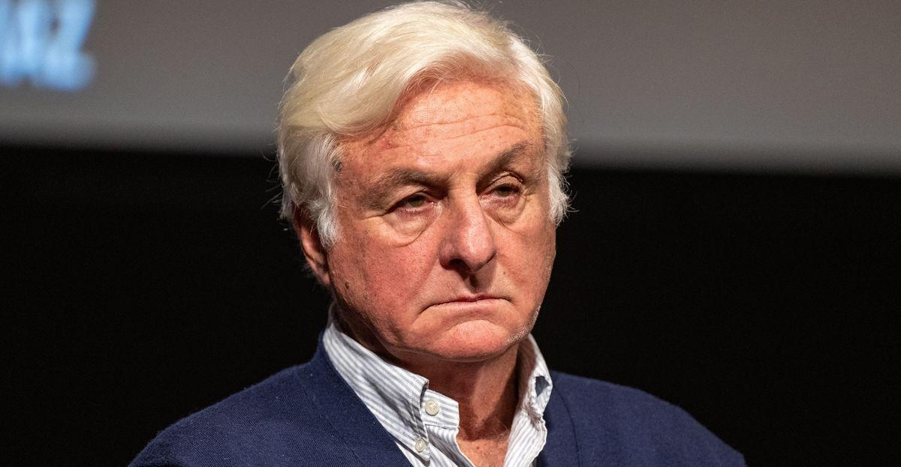

Survivor Of 1972 Plane Crash Recalls His Fight To Live By Resorting To CannibalismDr. Roberto Canessa, who resorted to cannibalism after a 1972 plane crash in the Andes Mountains, is looking back on that fateful accident. Canessa recounted the crash, in which 16 of 45 passengers and crew members stayed alive in freezing conditions by eating the dead, in a “Today” show interview that aired Thursday. “I thought I was going to die,” he said. The segment was partly spurred by “Society of the Snow,” a thriller about the harrowing disaster that’s set to stream on Netflix next month in the U.S. Canessa, who was part of a Uruguayan rugby team headed for a match in Chile at the time of the incident, has already seen the film. “I was immersed in that place again,” Canessa said in the interview. “I was back to the fuselage.” Those who ultimately survived Uruguayan Air Force Flight 571, which left Montevideo for Santiago before crashing in October 1972, managed to hold on for 72 days. There were 33 initial survivors, until an avalanche and starvation claimed a handful of lives. Canessa, who was a 19-year-old medical student at the time of the accident, told “Today” about the decision to eat the dead. “I thought if I would die,” he said, “I would be proud that my body would be used for someone else.” The doctor has previously recalled how the survivors cut the flesh off the dead “amid much torment and soul-searching,” and laying “the thin strips of frozen flesh aside on a piece of sheet metal.” “Each of us finally consumed our piece when we could bear to,” he said in a book. This was dramatized in “Alive,” a 1993 film starring Ethan Hawke. The true story also strongly parallels the premise of “Yellowjackets,” a TV series touching on the legal and psychological consequences of cannibalism. Canessa told People in 2016 that he and another teammate eventually managed to find a shepherd who “was generous enough to go and search for help for us.” He also said that something his mother told him long before the crash had helped saved him. “I remembered very vividly my mother and I went to [visit the mother of] a friend who had died and she was devastated,” he told People. “And my mother told me, ‘If one of my children died, I couldn’t make it through life, I would die of sadness.’ So I had to go back and tell my mother, ‘Don’t cry anymore, I’m alive.’ So I think that was the driving force for me.” Canessa, who is now a pediatric cardiologist, reportedly has regular reunions with other crash survivors. While he has no tips on how to survive a plane crash, he offered People one bit of advice: “You shouldn’t wait for your plane to fall to enjoy and be grateful for life.” |
 |